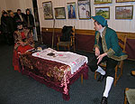
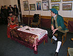
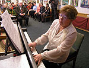
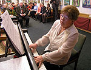

НОВИНИ 2008 РОКУ:
З НОВИМ 2009 РОКОМ! З РІЗДВОМ ХРИСТОВИМ!
1. Під завісу 2008 року новорічний подарунок клубові підніс Народний драматичний театр, яким керує от вже 46-й сезон Микола Олексійович Троянов. В музичній вітальні Художнього музею ім. В.В. Верещагіна, де 20-й сезон діє Пушкінський клуб, була поставлена комедія в одній дії К.Р. Дашковой «Пан Тоі-сі-Оков». Поміщаємо запрошення на цю неординарну подію. У ньому можна ознайомитися зі складом артистів театру. Думаю, що й в самій Росії ця п’єса Президента Академії Наук при Катерині II давно не ставилася. Приносимо вибачення усім, хто не вмістився в залі й слухав п’єсу в прихожій. Фоторепортаж про цю подію тому свідок.
2. У музичній вітальні художнього музею ім. В.В. Верещагіна 23 листопада п.р. вiдбувся літературно-музичний вечір Пушкінського клуба «Миколаївський Гогольфест», присвячений 200-річчю з дня народження Миколи Васильовича Гоголя. Літературну частину вечора вела Олена Михайлівна Фарберова. Про ілюстрації до творів Гоголя з колекції художнього музею ім. В.В. Верещагіна розповіла і продемонструвала Лідія Іванівна Одєгова. Про зв'язок творчості Гоголя з музикою повідала з музичною ілюстрацією на фортепіано Ольга Миколаївна Петренко. На закінчення вечора А.І. Золотухін розповів про зв'язки Пушкіна і Гоголя.
3. Рада Пушкінського клуба відбулася в кабінеті директора Миколаївського обласного художнього музею ім. В.В. Верещагіна С.Н. Рослякова. На засіданні 23 вересня 2008 р. рада підготовила зміни в складі контрольно-ревізійної комісії і прийняла програму роботи клубу на 20-й сезон: 2008-2009 рр. 28 вересня відбулися загальні збори Пушкінського клуба, на якому були затверджені Програма роботи клуба на сезон 2008-2009 рр., склад Ради і контрольно-ревізійної комисии клуба. Потім відбувся літературно-музичний вечір «Музична культура півдня України», що провела Ольга Петренко, вона ж ілюструвала на фортепіано зразки музики миколаївських композиторів, музику голови Союзу миколаївських композиторів Олега Таганова виконав Михайло Хван, учень Марини Матвєєвої.
4. 23 березня в Пушкінському клубі відбувся вечір, присвячений Всесвітньому дню поезії – читай про це редакційну статтю в газеті «Вечірній Миколаїв» від 27 березня п.р. «Все скороминуче – поезія вічна» на російській мові.
5. В газеті «Вечірній Миколаїв» 25 травня надрукована стаття А. Золотухіна «Нас нянчила війна…», тут надаємо її у перекладі автора без купюр.
6. Згідно з програмою роботи Пушкінського клубу в неділю 27 січня в музичній вітальні художнього музею ім. В.В. Верещагіна пройшов вечір клубу "Любові сторінки музика зберігає", виконавцем на роялі й автором музично-літературної композиції виступила Наталля Папушенко, в вечорі прийняла участь Алла Величко - сопрано. Були виконані: «Лунна соната» та «Елизі» Бетховена, «Серенада» Шуберта, «Пісня без слів» Мендельсона, «Романс» й «Вальс» Шумана, «Вальс» Брамса, два «Вальси» Шопена, «Як дух Лаури» та «Грьозы любові» Листа, а також романс «Люблю тебе» й «Весільний день в Трольгаузені» Гріга.
 
 

7. Нажаль, свобода слова в нас існує лише на 2-х телевізійних каналах, а в пресі вона підпорядкована або комерціалізації, або, як і досі, телефоному праву. В минулому році я не зміг оприлюднити в центральній та місцевій пресі («День», «Южная правда», «Вечерний Николаев», «Николаевский бизнес») статтю про видатного засновника нашої культури Іларіона-Нікона (997-1088), виведеного у «Слові о полку Ігоревім» під ім’ям Баяна. Не була надрукована в місьцевих газетах й моя стаття «Письмо к учёному соседу», через те розміщуємо їх в підрозділі «Публицистические статьи» розділа «Публикации».
8. Минулий рік був роком свині згідно зі східним календарем і аби позбавитися свинства в Новому 2008 році, в розділі «Публикации» в підрозділі «Публицистические статьи» розміщуємо лист Пушкінського клубу до Міського голови В.Д. Чайки, який, нажаль, й досі залишений мером навіть без формального відгуку. Це безпрецідентний випадок явної зневаги міської влади до громадської організації, яка діє з 1989 року, через яку за цей час пройшло декілько тисяч мешканців нашого міста, члени якої так багато й безкорисно зробили для збереження історичної пам’яті й культури міста Святого Миколая. Це є пряме свідоцтво безкультурності влади та явне нехтування історичної пам’яті – бо за 2 роки міська влада так і не знайшла 1500 грн. для відновлення меморіальної дошки на домі Г.П. Зонтаг, в якому О.С. Пушкін написав найкращі вірші, присвячені жінкам та початок листа Теттяни до Онєгіна з «Євгена Онегіна» (читайте статтю «В Николаеве нужно останавливаться у Зонтагов…»). Не кажучи вже про те, що 5-й рік поспіль лежить, виготовлена меморіальна дошка видатному громадському діячеві нашого міста Г.М. Гє (читайте статтю «Депутат городской думы»), але за цей час міська влада так й не спромоглася встановити її на цім домі по вул. Наваринська, 25.
ХРИСТОС НАРОДИВСЯ!
СЛАВІМО ЙОГО!
9. У ці Різдвяні дні ми славімо Господа, як нашу Віру, Надію й Любов. І відразу згадується Пушкін:
Если жизнь тебя обманет,
Не печалься, не сердись!
В день уныния смирись:
День веселья, верь, настанет.
Сердце в будущем живёт;
Настоящее уныло:
Всё мгновенно, всё пройдёт:
Что пройдёт, то будет мило.